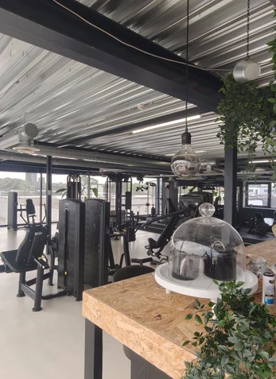

Spiermassa opbouwen in Leiderdorp vraagt om meer dan zwaar tillen. Het draait om progressieve overload, genoeg eiwit en kcal, en geduld. Bij Fit Up krijg je een methodisch hypertrofie-programma, voedingscoaching via app en metingen elke 4 weken — zodat je groeit op de plekken die je wilt, zonder giswerk.
Spier opbouwen is een ambacht: de juiste prikkel, genoeg voeding en geduld. Voor wie serieus wil groeien.
De meest gemaakte fouten bij spieropbouw, en hoe Fit Up Leiderdorp ze oplost.
Vier stappen van plan tot meetbare groei — gebaseerd op wat echt werkt.
Fit Up Leiderdorp heeft een goed uitgeruste krachtzone met vrije gewichten en machines, aan de Weversbaan 9 vlak bij Winkelhof. Goed bereikbaar vanuit Leiderdorp, Leiden, Oegstgeest en Voorschoten, met gratis parkeren.

Plan een gratis intake. We bekijken je niveau en doel en bouwen een programma dat je écht spiermassa laat opbouwen.